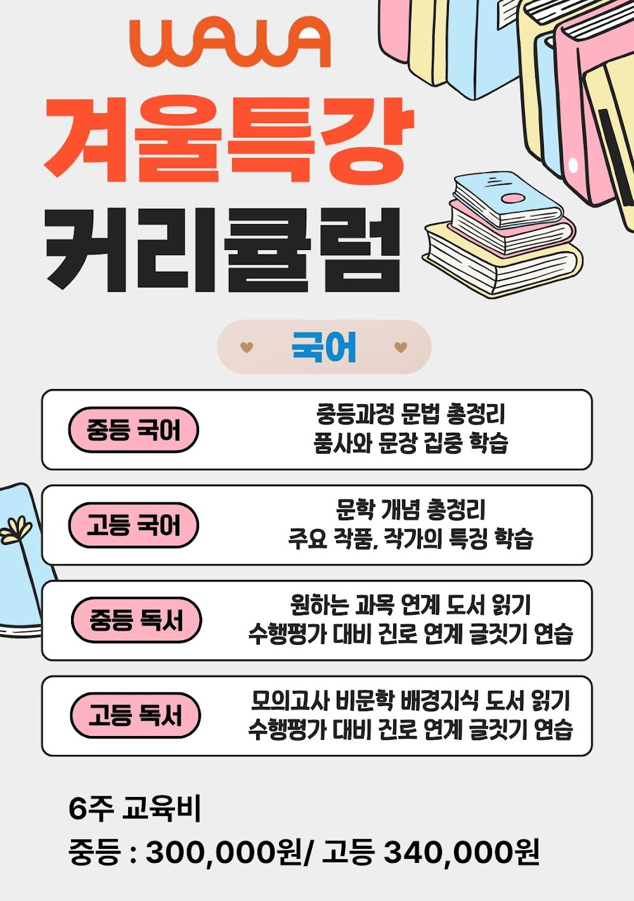
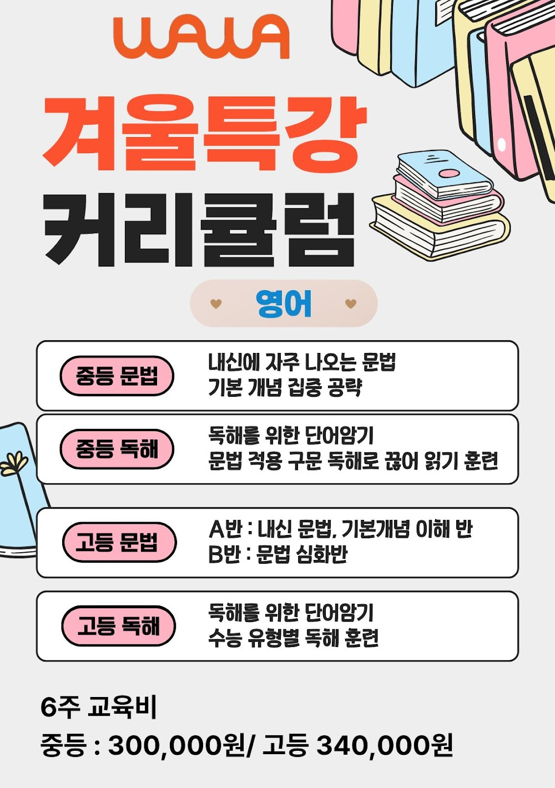
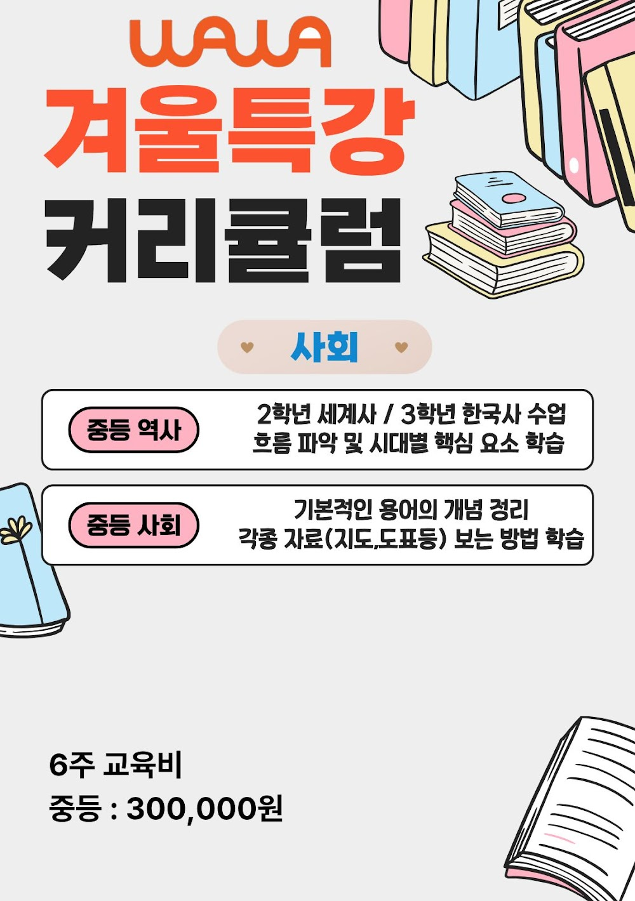

안녕하세요, 강서구 내발산동 마곡지구의 와와학습코칭 내발산점입니다. 이번 주부터 여름방학이 시작됐습니다. 방학은 성적을 뒤집을 수 있는 가장 큰 기회이자, 가장 쉽게 무너지는 시기이기도 합니다. 내발산점이 방학 첫 주를 어떻게 시작했는지 전해드립니다.
방학 첫 주, 성적보다 '리듬'부터
방학이 되면 아이들의 생활 리듬이 가장 먼저 무너집니다. 늦게 자고 늦게 일어나면, 아무리 좋은 계획도 지켜지지 않습니다. 그래서 내발산점은 방학 첫 주에 공부량을 늘리기보다 등원 시간과 학습 시간대를 고정하는 데 집중했습니다.
"몇 시간 공부했느냐"보다 "매일 같은 시간에 앉았느냐"가 방학의 승부처입니다. 첫 주에 리듬이 잡힌 학생은 남은 방학 6주를 온전히 쓸 수 있습니다.

중등 — 등명중·마곡하늬중 학생들의 2학기 준비
중등 학생들은 이번 주 1학기 내신 오답 분석부터 시작했습니다. 시험지를 다시 펼쳐 틀린 문제를 유형별로 나누고, 개념 부족인지 실수인지 스스로 분류하게 했습니다.
흥미로운 건, 많은 학생이 "몰라서 틀렸다"고 생각했던 문제 중 상당수가 사실은 문제를 끝까지 안 읽어서 틀린 것이었다는 점입니다. 이런 발견은 코치가 말해주는 것보다, 학생이 직접 찾아낼 때 훨씬 오래 남습니다.

초등은 습관, 고등은 전략
같은 방학이라도 학년마다 목표가 다릅니다. 공진초·가곡초 학생들은 하루 30분이라도 스스로 앉는 습관을 만드는 데 집중하고, 수명고 학생들은 2학기 내신과 수능형 문제를 함께 준비하는 6주 로드맵을 코치 선생님과 함께 세웠습니다.
- 초등 — 분량 목표(문제집 몇 쪽)로 성공 경험 쌓기
- 중등 — 1학기 오답 정리 후 2학기 선행 개념
- 고등 — 약한 단원 집중 복습 + 주 1회 실전 문제
방학이 끝날 때 아이가 "이번 방학은 좀 다르게 보냈다"고 느끼는 것 — 내발산점이 이번 여름에 만들고 싶은 결과입니다.
와와학습코칭 내발산점 인근 학교
내발산동·마곡 와와학습코칭(와와학습코칭 내발산점)은 인근 학교 학생들의 내신·수능을 함께 준비합니다. 아래 학교에 다니는 학생이라면 영어학원·수학학원·국어학원을 따로 찾을 필요 없이, 가까운 우리 센터에서 과목별 1:1 자기주도학습 코칭을 받을 수 있습니다.
- 인근 초등학교 — 공진초등학교, 가곡초등학교 영어학원·수학학원·국어학원
- 인근 중학교 — 등명중학교, 마곡하늬중학교 영어학원·수학학원·국어학원
- 인근 고등학교 — 수명고등학교 영어학원·수학학원·국어학원